BASE STUDIO ARGE VE TEKNOLOJİ SANAYİ A.Ş.EST. 2016 · GEBZE, TÜRKİYE
YOUR STRATEGICPARTNER INWHEELED MOBILITY.
Heavy-duty drivetrain systems — axles, transfer cases and thru drive units —
and complete turnkey rolling chassis platforms for 4×4, 6×6 and 8×8 configurations.
BASE delivers heavy-duty drivetrain solutions, supplying core drive
technologies — including axle, transfer case and thru drive unit — or complete running chassis
platform equipped with proprietary drivetrain.
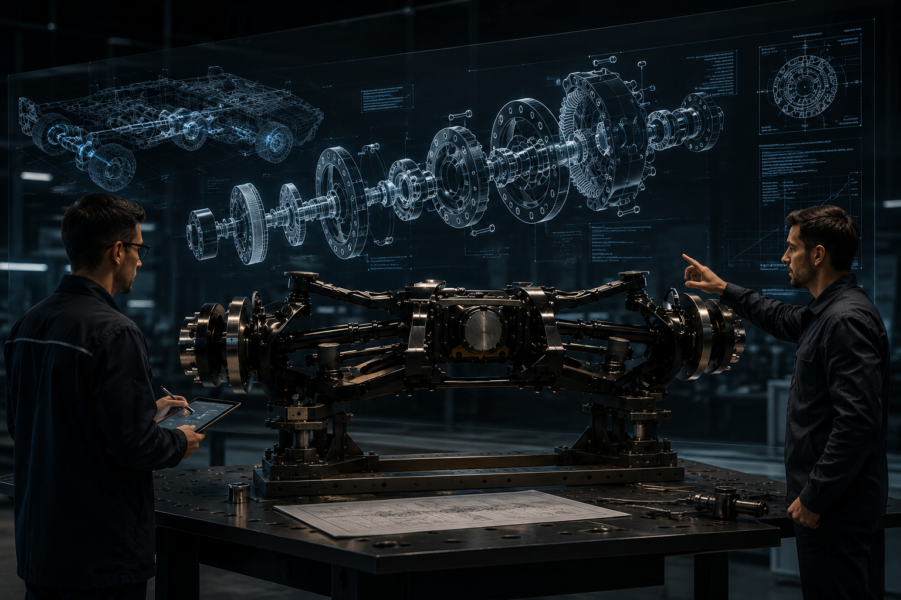
Advanced EngineeringAdvanced in-house expertise in axles, gears, and platform design.
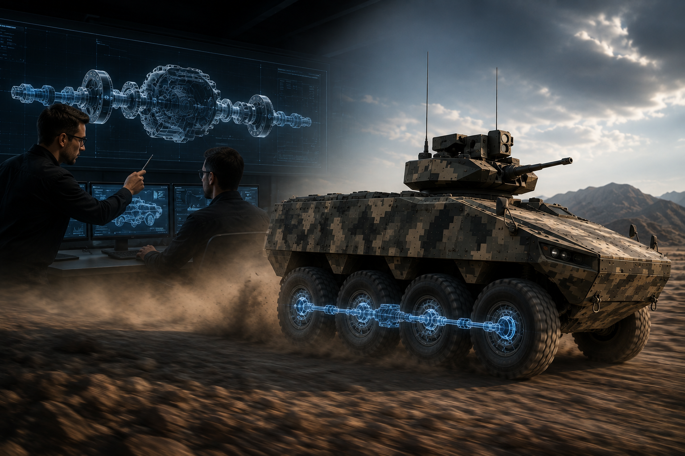
Fast ResponseAgile, flat organization — decisions made fast, customers served faster.
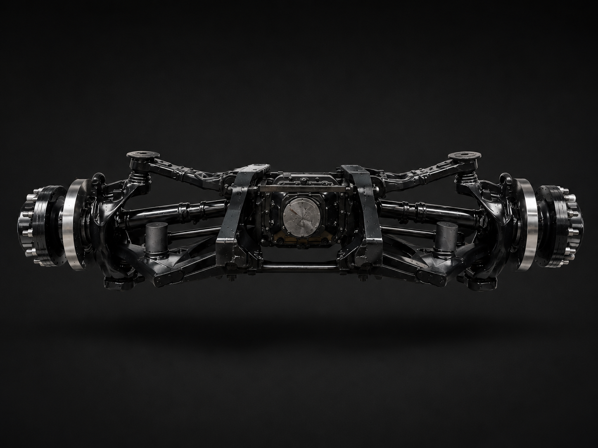
Robust ProductBattle-tested in the harsh fields of Turkey, the Middle East, and Europe.
02 — PLATFORM RANGE
One drivetrain family. Every platform class.
Select a platform to inspect it. Switch climate to see the same
drivetrain where it has to work.
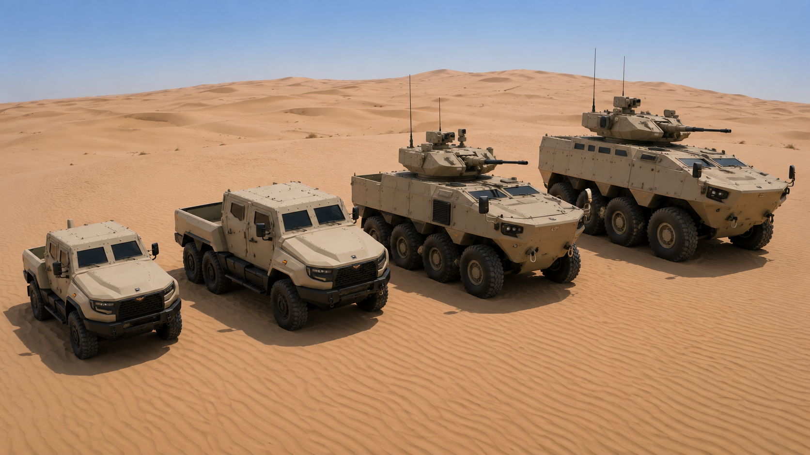
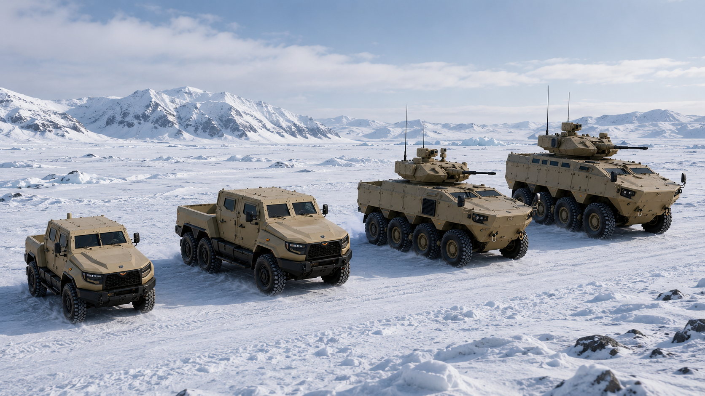
PLATFORM VISUALISATIONS ARE INDICATIVE. BASE SUPPLIES DRIVETRAIN AND ROLLING CHASSIS — NOT COMPLETE VEHICLES.
04 — DRIVETRAIN CONFIGURATOR
Tell us the platform. We'll name the driveline.
Set a configuration and a gross vehicle weight. The platform responds,
and the tool names the BASE axles, transfer case and — where it applies — the rolling chassis.
INDICATIVE SELECTION FOR ORIENTATION ONLY. AXLE LOAD IS SHOWN AS AN EVEN DISTRIBUTION
ACROSS AXLES; REAL LOAD DISTRIBUTION, DUTY CYCLE, GRADEABILITY AND ENGINE TORQUE DETERMINE THE FINAL
SPECIFICATION, WHICH IS CONFIRMED BY BASE ENGINEERING.
ENGINEERED IN-HOUSE. VALIDATED IN THE FIELD.
05 — PRODUCTS
Complete product range, mission-configured.
BASE designs, engineers and produces complete drivetrain packages for
off-highway and special purpose vehicle manufacturers. Driven by high aluminum content and topology optimization
capabilities, BASE products are lightweight, while modular structure enables easy customization and finetuning
according to specific vehicle manufacturer needs.
PORTFOLIO COVERAGE
One axle family. Six platform classes.
From an 8 t 4×4 to a 32 t 8×8 — the same engineering language,
scaled. Each platform class is matched by a BASE suspension and drive axle assembly.
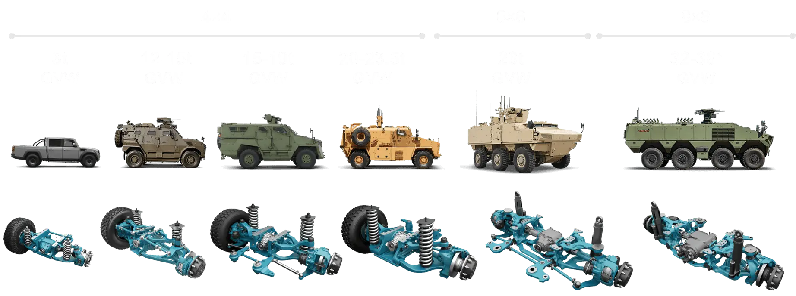
COMPARE
Put any three models side by side.
06 — IN-HOUSE BENCH VALIDATION
Validated before it reaches the field.
The Company has its in-house test and validation center equipped with
suspension test rig for fatigue and dynamometer test rig for gears and lubrication. These capabilities bring
significant advantages in project timing and safe product launch.
TESTING RUNS WITH DEVELOPMENTValidation is not a gate at the end — rigs run
while design iterates, which is what compresses the programme timeline.
SAFE PRODUCT LAUNCHFatigue, gear and lubrication behaviour are characterised
in-house before a platform reaches a customer's prototype.
07 — HOW WE BUILD
Eleven stages, one platform.
From the first CAD session to a rolling chassis on a cargo aircraft.
Hover any stage to preview it; click to play it full-bleed.
08 — FIELD EXPERIENCE
0VEHICLES SERVING IN DEMANDING ENVIRONMENTS
Thanks to the strong support of our trusted business partners, BASE drivetrain products
have proven their reliability and durability in the harshest field conditions across Turkey, the Middle East, and
Africa. Designed for extreme performance, our drivetrains withstand high temperatures, heavy loads, and demanding
terrains, ensuring maximum uptime and efficiency for industries operating in challenging environments.
FROM THE FIELD
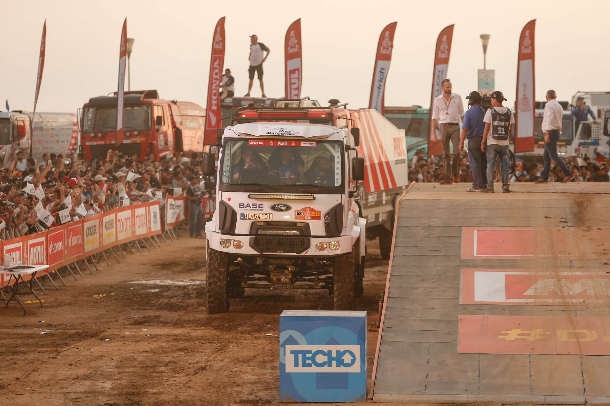
09 — PROVEN PERFORMANCE IN DAKAR RALLY
For the first time in Dakar Rally history,
a truck with independent suspension took part in the race — and completed it.
That suspension was designed and built by BASE. Together with the
VDR Racing Team, we equipped a Ford truck with our BASE Independent Suspension and put it to the ultimate
test — the world's toughest off-road race. The Dakar Rally experience supported our claim that BASE Independent
Suspension is ready for any challenge.
10 — INTRODUCTION FILM
Engineering, in motion.
BASE STUDIO INTRODUCTION MOVIE02:18 · FULL SCREEN AVAILABLE
0:00
11 — OPERATING MODEL
Any volume. Anywhere in the world.
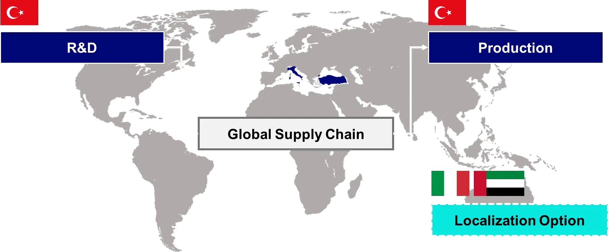
Flexible operating model for any volume and easy localization
Our operating model adapts to your needs — from low-volume, high-complexity builds to
large-scale manufacturing, while offering easy localization opportunity.
Low-volume, high-complexity builds
Large-scale serial manufacturing
CKD kits for in-country assembly
Technology transfer & localization support
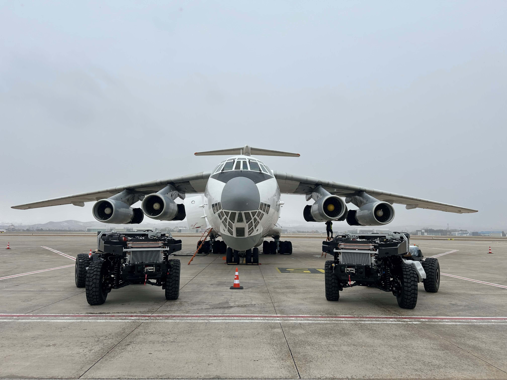
Delivered anywhere — assembled or as CKD kits
Complete rolling chassis platforms ship fully assembled for rapid deployment, or as
Completely Knocked Down kits for in-country assembly and localization.
Fully assembled for rapid deployment
CKD kits for localization
Air, sea and road freight
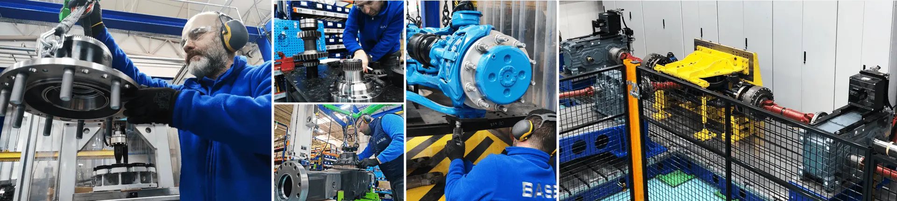
Lean assembly cells — easy to scale, anywhere in the world
Built on Lean Production Principles, our assembly cells deliver maximum efficiency and
consistent quality. Their modular design enables rapid replication with minimal investment.
Modular, replicable cell design
Minimal capital investment to stand up
Consistent quality across sites
12 — COMPANY
Your trusted solution partner.
Founded to add value to tactical vehicles — and shipped
wherever the mission is.
0FOUNDED
0VEHICLE SETS
EU · TR · ME · AFVALIDATED IN
0ISO CERTIFICATIONS
OUR VISION
To be a leading and innovative company that shapes the evolving mobility needs of the global market in
special vehicles and defense segments.
OUR MISSION
To deliver fast, reliable, and sustainable mobility solutions that create competitive advantage for our
customers in special vehicles and defense, powered by our advanced engineering capabilities.
Who We Are
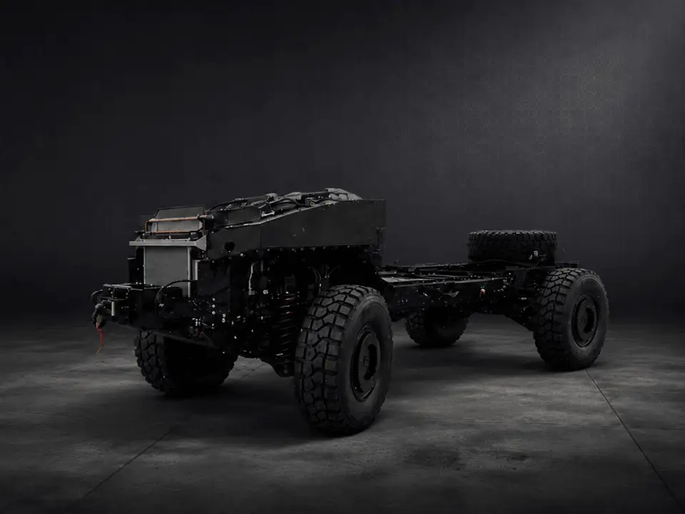
BS360-14C ROLLING CHASSIS
Founded in 2016, BASE Studio Arge ve Teknoloji Sanayi A.Ş. is a trusted solution partner
to leading heavy-duty vehicle OEMs, delivering complete drivetrain systems for 4×4, 6×6, and 8×8
configurations, as well as fully integrated, turnkey rolling chassis platforms offered to accelerate
time-to-market.
BASE's proprietary systems — including axles, transfer cases, and thru drives — are engineered
and manufactured in-house and, optionally, delivered as integrated rolling chassis platforms. All solutions are
rigorously validated in the demanding combat conditions of Europe, Turkey, the Middle East, and Africa,
ensuring best-in-class durability, reliability, and performance.
Guided by the principles of transparency, trust, and collaboration, BASE operates with a
customer-first mindset. Through agile development and flexible production capabilities, the Company helps the
specific needs of OEMs.
SUPPLIER OF STRATEGIC CONTENT
Powertrains are changing. The drivetrain is not. Axles, hub reduction and suspension carry
across to electric and alternative-fuel platforms — so BASE content doesn't shrink with the engine,
it becomes a larger share of what remains.
OUR WAY OF WORKING
BASE cares about people and environment. Hence, all the organization and processes are shaped
in a way to develop a sustainable environment.
At a defence exhibition, visitors see hundreds of products.
A HALL OF PRODUCTS · UNDIFFERENTIATED
BASE should not simply display an axle.
It should let visitors experience what that axle makes possible.
An axle on a plinth is a component. The same axle, driving a platform through
desert, arctic and extreme terrain on a panoramic wall the visitor controls, is a capability
demonstration — and a conversation opener.
02 / THE IDEA
BASE EXPERIENCE AREA
Your strategic partner in wheeled mobility —
experienced, not explained.
A
Two giant LED walls
Meeting at the rear corner and operating as one continuous panoramic digital environment —
the corner transition reads as a curve, not as two screens.
B
One premium touchscreen
Positioned in front of the installation. The visitor controls the entire LED environment
from a single, engineering-grade interface.
C
Two real BASE axles
Physical product, displayed toward the front of the stand in bronze-lit plinths.
The engineering hero — no complete vehicles in the booth.
D
Real-time configured content
Every touch on the controller changes the wall. Platform, environment, mission and
severity all respond instantly and continuously.
03 / THE SPACE
7 × 9.5 m corner stand. Two open sides.
66.5 m² of premium architectural structure organised around a
single focal installation.
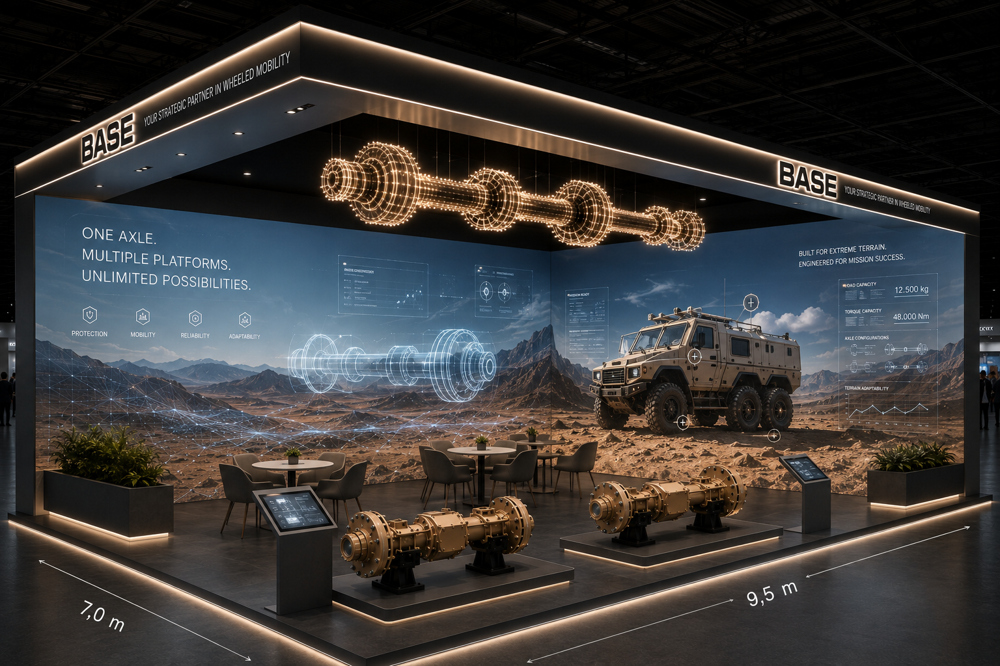
CONCEPT VISUALISATION · INDICATIVE
Two giant connected LED walls at the rear corner, curved seam
Two physical axle products on lit plinths toward the front
Touchscreen interaction point facing the installation
Meeting and seating areas positioned toward the rear
Overhead fascia with BASE brand line on both open sides
Suspended illuminated axle sculpture as the hall-level beacon
04 / THE EXPERIENCE
Five moves. Under five seconds to understand.
01
CHOOSE
2, 3 or 4 axles. The visitor starts from the only decision that matters to them:
how much platform their mission needs.
02
CONFIGURE
Environment and mission requirement. Optional engineering controls for payload,
gradient, terrain severity and climate.
03
EXPERIENCE
The two LED walls become one environment around the configured platform.
Engineering View strips the body away and reveals the BASE axle.
04
CHALLENGE
How far would you push it? The visitor raises payload, gradient, severity and
climate — and watches the environment get harder.
05
TAKE IT WITH YOU
The configured platform takes over both walls. The visitor leaves with a personalised
BASE Mobility Profile.
05 / THE INTERFACE
Working prototype.
Everything below is live. Use the touchscreen — the two LED walls
respond exactly as they would on stand 12-E13.
LED WALL SIMULATION
Two surfaces, one panorama. The scene is a single
continuous environment split across both walls; the corner is rendered as a curve, not a cut.
TOUCHSCREEN CONTROLLER
Large targets, minimal menu depth, engineering
tool language. Designed for a landscape touchscreen at standing height.
VISUALISATION, NOT SIMULATION
Force, traction and articulation readouts
are exhibition visualisations of engineering capability — not validated simulation output. Replaceable with
BASE datasets.
06 / ENGINEERING VIEW
The body disappears. The axle remains.
On activation, the vehicle body progressively becomes transparent and resolves to wireframe,
revealing chassis, suspension, axles, wheel positions and the mobility architecture — then visually
emphasises the BASE axle.
Chassis rails and cross members
Independent suspension geometry & wheel travel
Drive axles, differentials, hub reduction
Wheel positions and drive line
Return to Vehicle View at any point
LED WALL HEADLINE
ENGINEERING MOBILITY FROM THE GROUND UP.
EDITABLE COPY
07 / CHALLENGE MODE
HOW FAR WOULD YOU PUSH IT?
A second interaction mode. The visitor raises the difficulty — and the
LED environment becomes progressively more demanding.
Around the axle, simplified engineering visualisation shows force, traction, wheel
articulation and load distribution. This is an exhibition visualisation of engineering capability — not a
scientifically validated simulation. Validated datasets from BASE can replace the illustrative model.
AT MAXIMUM SEVERITY, THE WALLS RESOLVE TO
BUILT FOR EXTREME TERRAIN. ENGINEERED FOR MISSION SUCCESS.
A dedicated content mode. The number dominates the entire LED
environment while the world changes behind it — desert, mountain, forest, extreme terrain, arctic — and the
kilometre counter accelerates.
The world changes. The axle remains the constant.
100,000,000+ KM. ONE CONSTANT: RELIABILITY.
ALL CLAIMS EDITABLE — FINAL TECHNICAL / LEGAL VALIDATION BY BASEPLAY IN PROTOTYPE
09 / END OF EXPERIENCE
Not "FINISH". "YOUR PLATFORM IS READY."
T+0s
YOUR PLATFORM IS READY.
The touchscreen hands the moment over to the walls.
T+0–10s
Cinematic takeover
The configured vehicle takes both LED walls for 8–10 seconds, in the selected environment.
The visitor's personal moment.
T+10s
ENGINEERED FOR YOUR MISSION.
BASE · Your strategic partner in wheeled mobility.
TOUCHSCREEN
WHAT WOULD YOU LIKE TO DO NEXT?
SEND MY CONFIGURATION · TALK TO AN ENGINEER · CONTINUE EXPLORING
10 / LEAD GENERATION
The experience does not begin with a registration form.
This is essential. Let visitors experience the installation first.
Only request personal information when the visitor asks BASE to provide something valuable.
NEVER
Form first
A gate at the entrance costs engagement and produces low-quality data from visitors who
never saw the product.
ALWAYS
Value first
The form appears only after SEND MY CONFIGURATION or TALK TO AN ENGINEER —
when the visitor has already asked BASE for something.
SHORT
Four fields
Name · Company · Country · Business email. Optional project timeframe. Nothing else.
OPTIONAL
Scan event badge
Badge-scanner integration presented as an optional technical integration, subject to IDEX
exhibitor technology / API availability.
Consent statement is a placeholder to be adapted to BASE's privacy
requirements and applicable regulations (incl. KVKK / GDPR and UAE data provisions) during technical development.
11 / VISITOR OUTPUT
YOUR BASE MOBILITY PROFILE
Personalised, beautiful, and useful after the show. Generated live
from the visitor's own configuration.
TAKE YOUR CONFIGURATION WITH YOU
QR code opening a personalised mobile landing page
SEND TO MY EMAIL — sample email layout below
Selected configuration, environment and mission priority
Vehicle visualisation as configured
Relevant BASE axle / product recommendation
Relevant validated technical information
Contact BASE CTA · request engineering consultation
12 / PASSIVE DATA COLLECTION
Intelligence without identification.
Anonymous interaction data can be captured throughout the experience,
subject to appropriate privacy and analytics implementation. These interactions do not require identifying the
visitor — they provide aggregated market intelligence.
13 / IDENTIFIED LEAD DATA
Once a visitor voluntarily identifies themselves, the session connects to a lead profile.
Do not collect unnecessary personal information. Field set shown is the
proposed minimum; final scope to be confirmed with BASE legal and data protection requirements.
14 / LEAD INTENT METHODOLOGY
Four understandable stages. No arbitrary scoring.
We deliberately avoid presenting a numerical score as if it were
scientific. Behaviour maps to stages BASE sales can read at a glance.
OPTIONAL
BASE can later define CRM scoring rules around these behaviours — for example: Engineering View
opened + technical specifications viewed + configuration completed → auto-promote to PROJECT; explicit
engineering contact request → SALES LEAD with owner assignment. Rules to be agreed with BASE sales.
15 / BASE LIVE DASHBOARD
BASE EXPERIENCE DASHBOARD
Not visitor-facing. For BASE management, marketing and sales.
Live during the show, archived after it.
16 / SALES VIEW
The conversation starts already informed.
17 / POST-EVENT CLIENT OUTPUT
FROM EXPERIENCE TO INTELLIGENCE.
What BASE receives after IDEX.
PROPOSED DELIVERABLE
BASE EXPERIENCE INTELLIGENCE REPORT IDEX 2027
These are examples of the insights the system could produce using clearly
labelled hypothetical / demo data — not actual findings.
18 / DATA FLOW
One path in. Two paths out.
19 / EXPERIENCE PRINCIPLE
THE VISITOR GETS VALUE. BASE GETS INTELLIGENCE.
VISITOR
I experience BASE engineering. I build something relevant to my mission. I receive my configuration.
SALES
I understand what the visitor is interested in before the conversation begins.
MANAGEMENT
I understand what markets, platforms, environments and capabilities generated interest at IDEX.
20 / TECHNICAL ARCHITECTURE
Conceptual technology architecture.
POTENTIAL INTEGRATIONS — TO BE CONFIRMED DURING TECHNICAL DEVELOPMENT
IDEX BADGE SCANNINGSubject to exhibitor technology / API availability
BASE CRMTarget platform and export format to be confirmed
EMAIL AUTOMATIONTransactional provider to be selected with BASE
ANALYTICS PLATFORMPrivacy-compliant configuration to be agreed
No specific integration is claimed as available. Each is a candidate to be validated
with BASE IT and the IDEX organiser before commitment.
21 / DESIGN REQUIREMENTS
The interface is part of the exhibition architecture.
Not a generic SaaS dashboard. The visitor UI must feel built into the
stand — and be understood within roughly five seconds.
PALETTE
BASE EXPERIENCE AREA
FROM DISPLAYING ENGINEERING TO EXPERIENCING IT.
YOUR STRATEGIC PARTNER IN WHEELED MOBILITY.
BASE is not simply bringing two axles to IDEX.
BASE is turning its engineering into an experience — and every experience creates both a memorable
visitor interaction and measurable commercial intelligence.